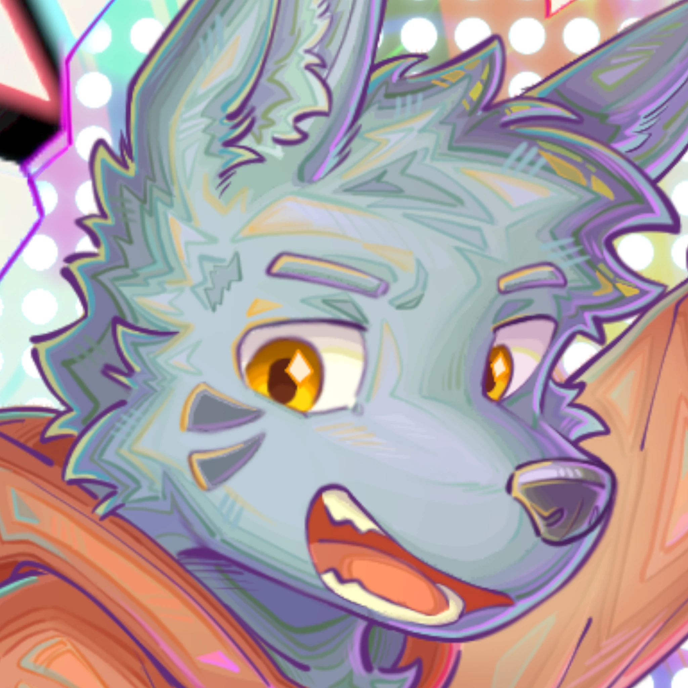

HEIGAO HUB ✦ HEIGAO HUB ✦
HEIGAO HUB ✦ HEIGAO HUB ✦
PORTFOLIO & WORKS PORTFOLIO & WORKS
PORTFOLIO & WORKS PORTFOLIO & WORKS
UTAU / CREATOR / ART UTAU / CREATOR / ART
UTAU / CREATOR / ART UTAU / CREATOR / ART
HEIGAO
ZH
EN
JA
SYS.ONLINE

黑篙 Heigao
Digital Creator / UTAU / Art
「熵尾音 クロ」 UTAU 展示页
创作日志 Blog